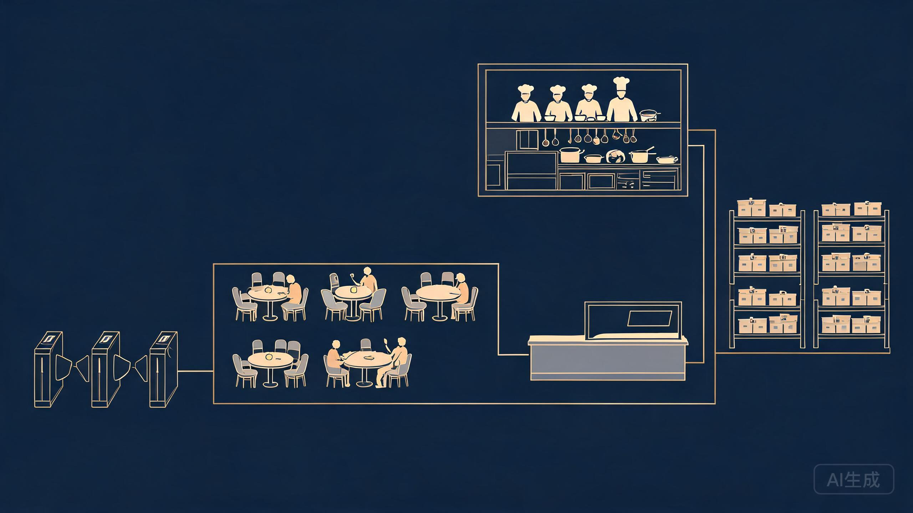
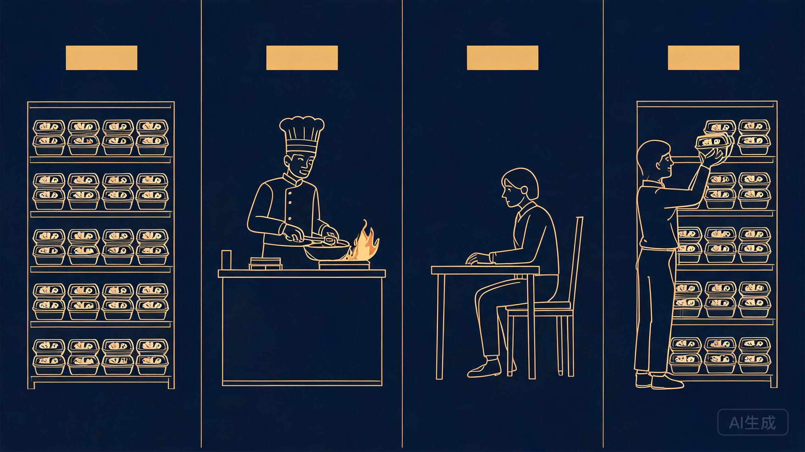
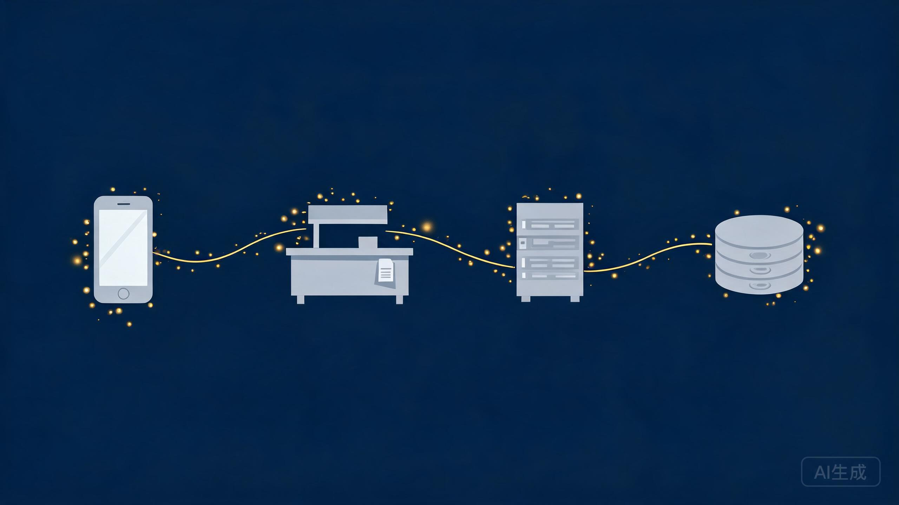
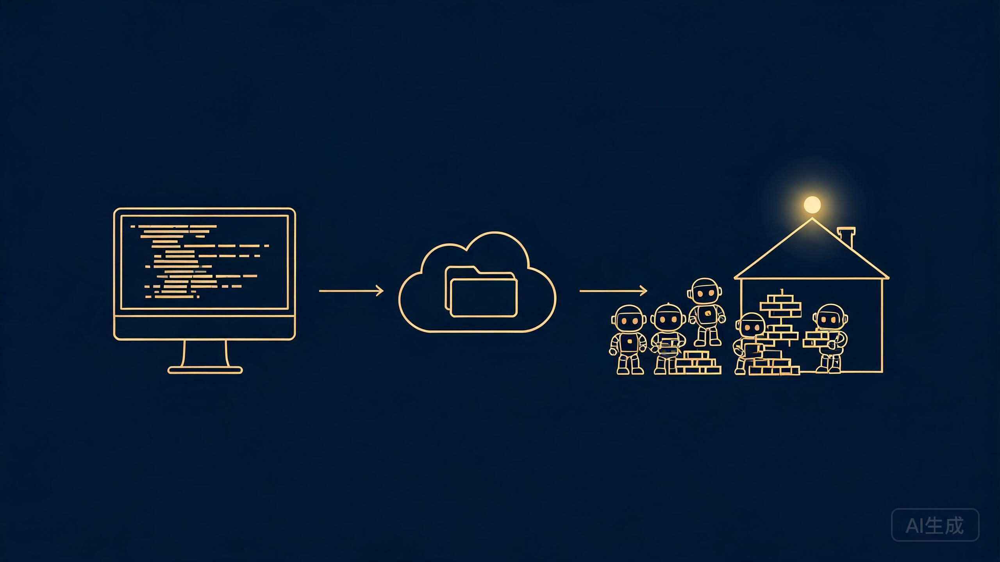

本期看点 · HIGHLIGHTS
壹
一张餐厅地图建立全局
贰
四大渲染模式一次分清
叁
最后只记两条链路
先看这张地图
有了这张图，再看下面这些概念，就容易很多。

来到第13天，今天聊点轻松的。
前面12天学下来，我发现一个很普遍的问题：很多人刚开始学 Web 开发时，不是代码不会写，而是名词太多，而且每个词都像懂了，又好像没完全懂。
比如：
- API 到底是什么？
- API Key 是身份证还是门禁卡？
- Cookie 和 Session 有什么区别？
- `.env.local` 和 `.env` 又是什么关系？
- SSR、CSR、SSG、ISR 到底有什么区别？
- Vercel、DNS、CDN 又分别负责什么？
如果这些概念只是零散地记，很容易越学越乱。
我自己也是这样过来的，所以把前面12天自学中涉及到的重要名词，整理成了一张地图，供大家参考。先用一个整体框架把 Web 产品串起来：
有了这张图，再看下面这些概念，就容易很多。
---
前端：用户真正看到和操作的部分
CHAPTER 01 · FRONTEND
01 · Layout：页面的公共骨架
Layout 就是一个网站的公共布局。比如很多页面都会共用顶部导航栏、左侧菜单、页脚，没必要每个页面重新写一遍，就抽成 Layout。
说人话 · PLAIN TALK
Layout 就像商场的建筑结构——不管里面开的是餐厅、服装店还是电影院，电梯、走廊、卫生间都是共用的。
02 · Component：可以重复使用的积木
Component 就是组件，前端开发里非常重要的概念：
Button
SearchBox
Navbar
ProductCard
LoginForm
UserAvatar
这些都可以做成独立组件，在不同页面重复使用。
说人话 · PLAIN TALK
Component 就像乐高积木——你不需要每盖一栋房子都重新制造一次窗户和门。React 和 Next.js 的核心思想之一，就是把一个复杂网页拆成很多可以组合和复用的小组件。
---
SSR、CSR、SSG、ISR：页面到底什么时候生成？
CHAPTER 02 · RENDERING
这四个词看起来很复杂，其实都在回答同一个问题：网页内容是什么时候生成的？
03 · CSR（客户端渲染）
浏览器打开网页 → 下载 JavaScript → JS 请求数据 → 浏览器生成页面。很多工作在用户浏览器里完成。
说人话 · PLAIN TALK
CSR 像客人到餐厅后，才开始现做。灵活，但第一口可能需要等。
04 · SSR（服务端渲染）
用户请求后，服务器先把页面生成好，再返回浏览器。流程：用户访问 → 服务器查数据 → 生成 HTML → 浏览器收到完整页面。
说人话 · PLAIN TALK
SSR 像客人点完菜，后厨直接做好整份再端出来。
05 · SSG（静态生成）
不是等用户访问才生成，而是在网站构建阶段就提前生成好 HTML。适合博客、产品官网、文档站、营销页面。
说人话 · PLAIN TALK
SSG 像便利店提前做好的便当，客人来了直接拿，非常快。
06 · ISR（增量静态再生）
可以理解为 SSG + 自动重新生成，页面先提前生成，过一段时间刷新成新版本。
说人话 · PLAIN TALK
ISR 就像便利店便当，但规定每隔一段时间重新换一批。

---
代码管理：为什么程序员离不开 Git？
CHAPTER 03 · VERSION CONTROL
07 · 源代码管理
源代码就是程序员真正写的代码（.ts/.tsx/.js/.css/.py），源代码管理就是对代码进行保存、组织、协作、追踪、备份。
说人话 · PLAIN TALK
源代码就是书稿，源代码管理就是管理书稿的全过程。
08 · 版本控制
重点就是记录每一次代码发生了什么变化：
V1 登录
V2 注册
V3 Google 登录
V4 修复登录 Bug
如果 V4 出问题，还能退回 V3。
说人话 · PLAIN TALK
版本控制就是游戏存档——打 Boss 前先存档，打崩了还能读档。
09 · Git
一个版本控制工具，负责 commit、branch、merge、diff、回退版本。
说人话 · PLAIN TALK
Git 就是一台代码时光机，可以看到过去每个时间点的代码，也可以回到某个历史版本。
10 · GitHub
注意，GitHub 不是 Git。Git 是工具，GitHub 是托管 Git 仓库的平台。Git 完全可以本地用，没有 GitHub 也能工作。GitHub 额外提供云端保存、多人协作、Pull Request、Issue、CI/CD、开源社区。
说人话 · PLAIN TALK
Git 是你电脑里的相册管理功能，GitHub 是云相册。
11 · Diff
显示两个版本之间具体改了什么：
- const name = "Tom"
+ const name = "Jerry"
说人话 · PLAIN TALK
Diff 就像 Word 的修订模式，删了什么、加了什么、改了什么都清清楚楚。
---
后端：用户看不到，但真正干活的地方
CHAPTER 04 · BACKEND
12 · 后端/服务端
前端负责用户看到什么、点什么；后端负责点完以后真正发生什么。比如点击"购买"后，后端可能执行：检查登录 → 查询库存 → 计算价格 → 创建订单 → 调用支付 → 保存数据库 → 返回结果。
说人话 · PLAIN TALK
前端是餐厅大堂，后端是后厨。 顾客不用知道厨房怎么炒菜，只需要点菜。
13 · 全栈（Full Stack）
前端和后端都能做。一个 Next.js 项目里可以同时包含页面、API、数据库访问、服务器逻辑。
说人话 · PLAIN TALK
全栈开发者就是既能接待客人，又会进后厨做菜的人。
---
API：最容易被比喻错的概念之一
CHAPTER 05 · API
API 到底更像菜单还是服务员？ 如果只能二选一：更像菜单，而不是服务员。更准确地说，API = 菜单 + 点餐窗口。
因为 API 本身定义的是：你能调用什么能力、从哪里调用、用什么方式调用、需要提供什么参数、会返回什么结果：
GET /products
POST /orders
DELETE /orders/123
这就像菜单告诉你：可以查商品、可以下订单、可以取消订单。真正处理这些事情的，是后端服务。

所以完整比喻应该是：API = 菜单 + 点餐窗口，HTTP Request = 你下的订单，后端服务 = 后厨，HTTP Response = 做好后端回来的菜。
以前常把 API 比作"服务员"，虽然方便入门，但并不够准确。
14 · API Key
调用某个 API 时使用的一种访问凭证。服务器可能通过它判断：这是哪个账号、有没有权限、用了多少额度、应该扣谁的钱。
API Key 更像身份证还是门禁卡？更准确的是门禁卡——身份证的重点是"证明你是谁"，门禁卡的重点是"证明你有权限进去"。甚至可以理解为一张实名绑定的门禁卡：服务器知道这张卡属于谁，但调用时主要验证的是权限。
所以 API Key 一旦泄露，别人通常就可以冒用你的权限和额度。
15 · Route（路由）
解决的是"不同 URL 应该交给谁处理"：
/ → 首页
/about → 关于页面
/products → 商品列表
/products/123 → 商品详情
说人话 · PLAIN TALK
Route 就像商场里的指示牌——1 楼餐饮，2 楼服装，3 楼电影院。
16 · API Route
也是路由，但它一般不是返回网页，而是返回数据或者执行后端逻辑：
/api/users
/api/login
/api/products
普通 Route 是"去 3 楼电影院"，API Route 是"去后厨窗口办理一个具体业务"。
---
数据库：软件的数据仓库
CHAPTER 06 · DATABASE
17 · 数据库
负责长期保存和查询数据——用户、商品、订单、评论、支付记录、文章。
说人话 · PLAIN TALK
数据库就是超级智能档案室。你可以直接问："找出上海用户最近 30 天购买金额超过 1000 元的订单"，数据库能很快查出来。
18 · 关系数据库
用 Table、Row、Column 组织数据：
Users
id | name | email
Orders
id | user_id | price
两个表之间可以通过 `user_id` 建立关联。
说人话 · PLAIN TALK
像很多张 Excel 表，但这些表之间还能互相建立关系。 常见的有 PostgreSQL、MySQL、SQLite。
19 · SQL
和关系数据库沟通的一种语言：
SELECT * FROM users;
意思就是：把所有用户找出来。
说人话 · PLAIN TALK
数据库是仓库管理员，SQL 是他听得懂的语言。
---
环境变量：代码之外的配置
CHAPTER 07 · ENV VARIABLES
20 · 变量
给一个值取一个名字：
const age = 40
说人话 · PLAIN TALK
变量就是贴了标签的盒子——盒子标签叫 `age`，里面装的是 `40`。
21 · 环境变量
一类特殊配置，不直接写死在代码里，由运行环境提供给程序：
DATABASE_URL
API_KEY
APP_URL
尤其适合保存数据库地址、API Key、服务配置、不同环境下不同的值。
说人话 · PLAIN TALK
普通变量像写在菜谱里的"盐 5 克"，环境变量像锁在经理柜子里的保险箱密码。
22 · `.env` 和 `.env.local`
这里非常容易误解。很多人会以为 `.env.local = 本地，.env = 服务器`——这是不对的。
更准确的是：`.env` 和 `.env.local` 都只是环境变量配置文件。`.env` 是通用配置；`.env.local` 是当前机器自己的私有配置，通常优先覆盖 `.env`。`.env.local` 一般不会提交 GitHub。
那服务器上的环境变量放哪里？ 生产环境里通常不需要真的放一个 `.env` 文件。比如 Vercel 会直接提供 Settings → Environment Variables，你填进去，运行时 Vercel 自动把这些值注入你的程序。
所以更准确的理解是：`.env.local` 是你本机的密码本，生产环境变量更像云平台保险柜里的配置——而不是"本地用 .env.local，服务器用 .env"。
---
运行环境
CHAPTER 08 · RUNTIME
23 · Node.js
JavaScript 的运行环境。过去 JavaScript 主要跑在浏览器里，有了 Node.js 后，JavaScript 也可以运行在 Windows、Linux、服务器、命令行。
对 Next.js 初学者，先记：Next.js 是框架，Node.js 是它常用的运行环境。
说人话 · PLAIN TALK
JavaScript 是汽车，Node.js 是让它可以跑起来的一套道路和运行条件。
24 · npm / pnpm
都是 JavaScript 包管理器，负责安装依赖、删除依赖、升级依赖、执行脚本：
pnpm install
就是安装这个项目需要的所有依赖。
说人话 · PLAIN TALK
npm / pnpm 就像项目采购员——项目说需要 React、Next.js、Zod、Drizzle，采购员帮你全部准备好。
25 · 项目依赖
你的项目依赖别人已经写好的代码包：
next
react
zod
drizzle
说人话 · PLAIN TALK
一家餐厅不会自己生产盐、酱油、面粉——这些外部采购的东西，就是依赖。
---
Cookie 和 Session
CHAPTER 09 · COOKIE & SESSION
26 · Cookie
网站让浏览器帮它保存的一小段数据：
session_id=abc123
之后访问网站时，浏览器可以自动带上它。
说人话 · PLAIN TALK
Cookie 像游乐园发给你的手环或号码牌——工作人员看到它，就知道你之前来过。
27 · Session
服务器保存的一段用户会话状态。例如服务器可能保存 `abc123 → user_id = 9527, logged_in = true`，浏览器 Cookie 里只需要存 `abc123`。
说人话 · PLAIN TALK
Cookie = 酒店房卡，Session = 酒店前台系统里的入住记录。你手里拿着房卡，真正知道你是谁、住哪个房间、什么时候退房的，是酒店前台系统。
---
Next.js 和 IDE
CHAPTER 10 · NEXT.JS & IDE
28 · Next.js
基于 React 的 Web 框架，帮开发者解决很多常见问题：页面、路由、Layout、SSR、SSG、API Route、服务端逻辑、构建、部署优化。
说人话 · PLAIN TALK
React 像建筑材料，Next.js 像一整套建筑方案、施工规范和工具箱。
29 · IDE
集成开发环境，比如 VS Code、WebStorm。提供代码编辑、自动补全、语法高亮、Git、调试、终端、插件。
说人话 · PLAIN TALK
IDE 就是程序员的工作台。
---
Hash
CHAPTER 11 · HASH
30 · Hash
给一段数据生成一个固定形式的数字指纹：
hello
↓ Hash
↓
2cf24dba5f...
只要原内容稍微变化，Hash 往往就会完全不同。
说人话 · PLAIN TALK
Hash 就像文件的指纹。常用于判断文件是否改变、校验数据、密码存储、缓存判断。
特别要注意：Hash 不等于加密。加密通常希望可以解密，Hash 通常不需要，也不能直接还原。
---
API 进阶
CHAPTER 12 · API ADVANCED
31 · API 平台
集中提供和管理 API 的平台，可能包含 API 文档、API Key、调用统计、计费、限流、日志、多种模型或服务。
说人话 · PLAIN TALK
一个 API 像一家餐厅，API 平台像美食广场。
32 · API 四要素
一次常见的 API 请求，先记住四个东西：URL、Method、Headers、Body：
POST https://example.com/api/chat
Authorization: Bearer ***
Content-Type: application/json
{
"message": "你好"
}
33 · curl
通过命令行发送 HTTP 请求的工具：
curl https://api.example.com/users
说人话 · PLAIN TALK
API 是电话号码，curl 是一部最直接的电话。 开发者经常用它测试：这个 API 到底通不通？
34 · Bearer Token
一种常见的身份凭证携带方式：
Authorization: Bearer ***
核心思想：谁持有这个 Token，谁就可以使用对应权限。
说人话 · PLAIN TALK
Bearer Token 像 VIP 票——门卫主要看票有效不有效。所以 Token 一旦泄露，也非常危险。
35 · HTTP GET / POST
HTTP Method 表示你希望服务器做什么。最常见的是 GET → 获取数据，POST → 提交或创建：
GET /products → 给我商品列表
POST /orders → 创建一个订单
说人话 · PLAIN TALK
GET = 看菜单，POST = 正式下单。
36 · Postman
一个 API 测试工具，让你通过图形界面填写 URL、Method、Headers、Body、Authorization，然后点 Send。
说人话 · PLAIN TALK
curl 像命令行电话，Postman 像带通讯录、拨号界面和通话记录的智能手机。
37 · HTTP Request / Response
HTTP 最基本的模式：
Client → Request → Server → Response → Client
Request 是客户端提出要求，Response 是服务端返回结果。
说人话 · PLAIN TALK
Request = 你下单，Response = 菜做好以后端回来。
38 · REST API
一种非常流行的 API 设计风格，常常围绕资源来设计：
GET /users
GET /users/123
POST /users
PATCH /users/123
DELETE /users/123
说人话 · PLAIN TALK
像档案室的标准办事流程——GET 查档案、POST 新建档案、PATCH 修改档案、DELETE 删除档案。
39 · WebSocket API
普通 HTTP 通常是一问一答（你问 → 服务器回答 → 结束）。WebSocket 则是建立一条持续连接（Client ⇄ Server），双方都可以随时发送消息。适合实时聊天、在线游戏、股票行情、协同编辑、实时通知。
说人话 · PLAIN TALK
HTTP 像发短信，WebSocket 像电话接通以后一直不挂。
40 · Streaming API
不等全部内容生成完成再一次性返回，而是一边生成一边传给你。比如 AI 对话：
你好
你好，
你好，我
你好，我是……
说人话 · PLAIN TALK
普通 API 像接满一桶水再给你，Streaming 像打开水龙头，水一边产生一边流。
---
部署
CHAPTER 13 · DEPLOYMENT
41 · Vercel
云部署平台，尤其适合 Next.js。典型流程：写代码 → Push GitHub → Vercel 自动构建 → 部署 → 生成公网网站。
说人话 · PLAIN TALK
GitHub 是建筑图纸仓库，Vercel 是自动施工队 + 物业——你把最新图纸交过去，它自动帮你盖好并开放营业。

域名：
google.com
openai.com
example.com
服务器真正通信依赖 IP，但 IP 难记，因此人们使用域名。
说人话 · PLAIN TALK
IP 像经纬度，域名像一个地点的名字。
42 · DNS Server
负责域名 → IP 的转换：
example.com → 找到对应 IP
说人话 · PLAIN TALK
DNS 就像互联网地图——你输入"星巴克"，地图帮你找到具体坐标。
---
安全
CHAPTER 14 · SECURITY
43 · CAPTCHA
常见的人机验证，比如图片验证码、滑块、点击"我不是机器人"、行为分析。作用是判断当前操作网站的是人还是自动机器人。
说人话 · PLAIN TALK
CAPTCHA 就像门口保安。主要防机器人注册、恶意刷接口、垃圾评论、撞库、自动化攻击。
---
云服务
CHAPTER 15 · CLOUD
44 · S3 / R2 云存储
都属于对象存储，适合存图片、视频、音频、PDF、用户上传文件、备份。
说人话 · PLAIN TALK
数据库像档案室，S3/R2 像大型仓库。数据库里可能只记录"用户头像地址 = xxx/avatar.jpg"，真正的图片文件放在 S3 或 R2。
45 · CDN
把网站资源分发到世界各地的节点，用户访问时从离自己更近的位置获取内容。
说人话 · PLAIN TALK
没有 CDN，就像全世界只有一个总仓；有 CDN，就像在不同国家建立很多前置仓——用户就近取货，速度更快。
46 · Cron Jobs
按照时间自动执行任务：
每天 8 点抓新闻
每天 24 点生成报表
每小时清理缓存
每周一发周报
说人话 · PLAIN TALK
Cron Job 就是闹钟 + 自动机器人——不仅提醒你，时间一到它自己就开始干活。
---
邮件和客服
CHAPTER 16 · EMAIL & SUPPORT
47 · Email API / Resend
让程序自动发送邮件的接口。比如用户注册后：你的服务器 → Email API → 发送验证邮件。Resend 就是提供这类服务的平台之一。
说人话 · PLAIN TALK
你的程序负责写信，Email API 像邮局。
48 · Live Chat Widget
很多网站右下角那个"需要帮助吗？"——嵌入网站里的客服聊天组件。
说人话 · PLAIN TALK
Live Chat Widget 就像商场服务台。
---
数据库进阶
CHAPTER 17 · DB ADVANCED
49 · Drizzle ORM
TypeScript 生态中的 ORM 工具之一。ORM 可以简单理解为：帮程序员更方便地通过代码操作数据库。本来你可能直接写 SQL：
SELECT * FROM users WHERE id = 1;
使用 ORM 后，可以用 TypeScript 风格的代码来组织数据库查询。
说人话 · PLAIN TALK
数据库只听 SQL，ORM 像翻译官 + 数据库操作助手。 不过要注意：学 ORM 不代表可以不学 SQL——SQL 依然是底层非常重要的能力。
50 · Database Migrations
数据库结构变化的版本记录。比如最初 Users 表只有 id/name/email，后来新增 avatar：
V1 创建 users
V2 新增 avatar
V3 新增 phone
V4 删除 birthday
说人话 · PLAIN TALK
Database Migration 就像办公楼改造记录——什么时候增加会议室，什么时候拆掉储物间，都有历史记录。
---
Elo Rank
CHAPTER 18 · ELO RANK
51 · Elo Rank
根据比赛结果动态计算实力评分的方法。它不仅看你赢没赢，还看你赢的是谁：
A：2000 分
B：1200 分
如果 A 赢 B，很正常，A 不会涨很多；如果 B 赢 A，属于爆冷，B 会涨很多分。
说人话 · PLAIN TALK
打赢 10 个普通选手，不等于打赢 10 个世界冠军。 Elo 的核心思想就是：一次胜负的价值，要结合对手实力和预期结果来看。它现在也常用于游戏匹配、排行榜、AI 模型竞技场、推荐排序系统。
---
最后：真正要记住的不是 54 个名词，而是两条链
CHAPTER END · TWO CHAINS
如果把整篇文章压缩成两条最重要的链路：
第一条：用户使用产品的链路
用户 → 前端 → API → 后端 → 数据库
必要时再接入：云存储、邮件、第三方 API、WebSocket、Cron、CDN。
第二条：开发者把产品做出来的链路
IDE 写代码 → Next.js 开发 → Node.js 运行 → npm/pnpm 管依赖
→ Git 管版本 → GitHub 存代码 → Vercel 部署 → 域名 → DNS → 用户访问
一旦这两条链真正理解了，前面几十个名词就不会再是散落的知识点。
它们其实都在回答同一个问题：
> 一个 Web 产品，是怎么从代码，变成一个真正可以被用户访问和使用的产品的？
我是未迟，正在挑战30天自学Web出海，我们下期见。
FIN
END OF REEL · 本卷完
我是未迟
正在挑战30天自学Web出海，把 54 个名词整理成一张地图
如果这张地图对你有启发，欢迎点赞、在看、转发三连，我们下期见。
AMBER FILM · 感谢阅读